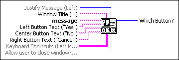
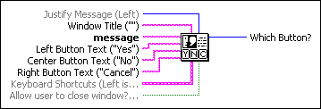

Three Button Dialog VI
Owning Palette: Dialog & User Interface VIs and Functions
Requires: Base Development System
Displays a dialog box that contains a message and three buttons.

 Add to the block diagram Add to the block diagram |
 Find on the palette Find on the palette |
Owning Palette: Dialog & User Interface VIs and Functions
Requires: Base Development System
Displays a dialog box that contains a message and three buttons.

| Add to the block diagram |
Find on the palette |
 |
Justify Message sets the justification of the text that is displayed.
|
||||||||||||||||||||||||
 |
Window Title is the text to display in the title bar of the dialog box. | ||||||||||||||||||||||||
|
message is the text to display in the dialog box. The dialog box has a maximum size based on your computer screen resolution and system font size. If the text exceeds the maximum size of the dialog box, a vertical scrollbar appears on the right side. Scroll to display the text beyond the maximum size. | ||||||||||||||||||||||||
|
Left Button Text is the text to display on the left button. The default is Yes. | ||||||||||||||||||||||||
|
Center Button Text is the text to display on the center button. The default is No. | ||||||||||||||||||||||||
|
Right Button Text is the text to display on the right button. The default is Cancel. | ||||||||||||||||||||||||
 |
Keyboard Shortcuts specifies keyboard shortcuts for each button in the dialog box. For example, you can specify a shortcut of <F1> for a Help button in the dialog box. The default is a shortcut of <Enter> for the left button and no shortcuts for the center and right buttons.
| ||||||||||||||||||||||||
 |
If Allow user to close window? is TRUE (default), the operating system window close button appears in the dialog box, and the user can close the dialog box without clicking the left, center, or right buttons. In most operating systems, the window close button appears in the upper right corner of the window. | ||||||||||||||||||||||||
 |
Which Button? indicates which button the user clicked.
|
If you wire an empty string to a button text input, this VI hides that button. This allows you to convert a three button dialog box to a one or two button dialog box. For example, you could use this functionality to hide a Help button when no help is available. If you wire an empty string to all three button text inputs, this VI displays a dialog box with a single default OK button.